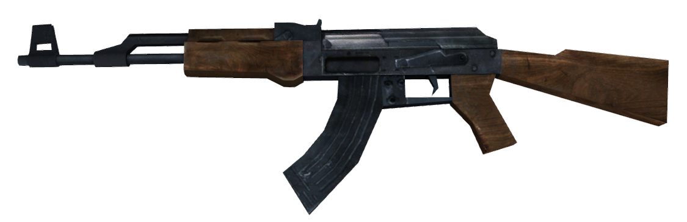
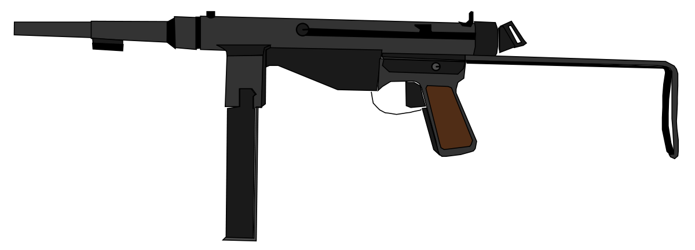
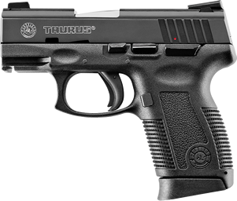

Armas de fogo
Uma arma de fogo é um artefato que lança um ou mais projéteis em alta velocidade através de uma explosão, que geralmente são usados com o intuito de atacar ou defender. Este processo de queima subsônica é tecnicamente conhecido como deflagração, em oposição a combustão supersônica conhecida como detonação. Em armas de fogo mais antigas, o propulsor era tipicamente a pólvora negra ou a cordite, mas armas de fogo modernas usam a pólvora sem fumaça ou outros propelentes. A maioria das armas de fogo mais modernas (com a notável exceção das armas de alma lisa) tem canos raiados (ranhuras internas espiraladas) para dar giro ao projétil visando dar melhor estabilidade ao voo do mesmo. É imprescindível para o funcionamento da arma de fogo também a munição.
As armas de fogo, podem ser divididas em armas de artilharia, se a operação envolve vários homens e a arma é dirigida não a um único adversário, como canhões e obuseiros e armas de fogo portáteis como pistolas, fuzis, submetralhadoras e metralhadoras onde as armas podem ser usadas e tomadas individualmente. Por definição, deve ser de um tamanho inferior a 20 mm, e pesar menos de 20 kg e ter balas de fogo inertes.
Veja fotos de algumas armas de fogo!


